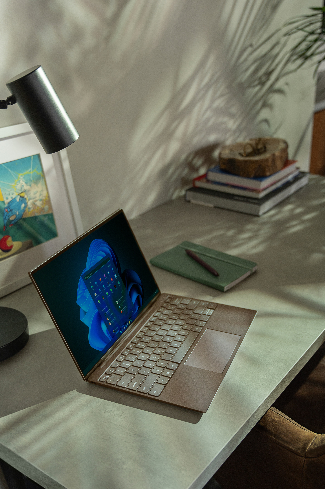

MicroSoft
Microsoft Corporation is an American multinational technology corporation which produces computer software, consumer electronics, personal computers, and related services headquartered at the Microsoft Redmond campus located in Redmond, Washington, United States. Its best-known software products are the Windows line of operating systems, the Microsoft Office suite, and the Internet Explorer and Edge web browsers. Its flagship hardware products are the Xbox video game consoles and the Microsoft Surface lineup of touchscreen personal computers. Microsoft ranked No. 21 in the 2020 Fortune 500 rankings of the largest United States corporations by total revenue;[2] it was the world's largest software maker by revenue as of 2019. It is one of the Big Five American information technology companies, alongside Google, Amazon, Apple, and Meta. Microsoft was founded by Bill Gates and Paul Allen on April 4, 1975, to develop and sell BASIC interpreters for the Altair 8800. It rose to dominate the personal computer operating system market with MS-DOS in the mid-1980s, followed by Windows. The company's 1986 initial public offering (IPO), and subsequent rise in its share price, created three billionaires and an estimated 12,000 millionaires among Microsoft employees. Since the 1990s, it has increasingly diversified from the operating system market and has made a number of corporate acquisitions, their largest being the acquisition of LinkedIn for $26.2 billion in December 2016,[3] followed by their acquisition of Skype Technologies for $8.5 billion in May 2011.[4]
As of 2015, Microsoft is market-dominant in the IBM PC compatible operating system market and the office software suite market, although it has lost the majority of the overall operating system market to Android.[5] The company also produces a wide range of other consumer and enterprise software for desktops, laptops, tabs, gadgets, and servers, including Internet search (with Bing), the digital services market (through MSN), mixed reality (HoloLens), cloud computing (Azure), and software development (Visual Studio). Steve Ballmer replaced Gates as CEO in 2000, and later envisioned a "devices and services" strategy.[6] This unfolded with Microsoft acquiring Danger Inc. in 2008,[7] entering the personal computer production market for the first time in June 2012 with the launch of the Microsoft Surface line of tablet computers, and later forming Microsoft Mobile through the acquisition of Nokia's devices and services division. Since Satya Nadella took over as CEO in 2014, the company has scaled back on hardware and has instead focused on cloud computing, a move that helped the company's shares reach its highest value since December 1999.[8][9] Earlier dethroned by Apple in 2010, in 2018 Microsoft reclaimed its position as the most valuable publicly traded company in the world.[10] In April 2019, Microsoft reached the trillion-dollar market cap, becoming the third U.S. public company to be valued at over $1 trillion after Apple and Amazon respectively. As of 2022, Microsoft has the fourth-highest global brand valuation. Microsoft has been criticized for its monopolistic practices and the company's software has been criticized for problems with ease of use, robustness, and security.
